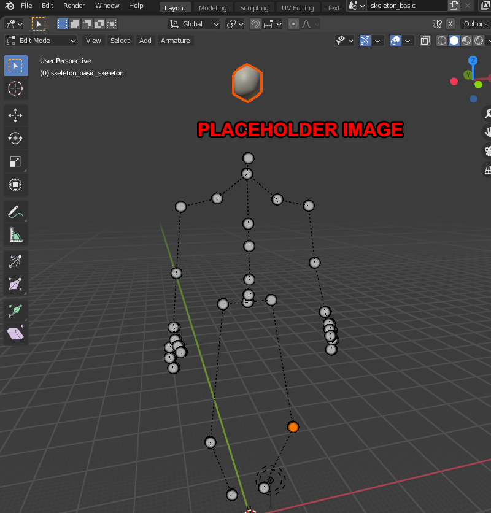
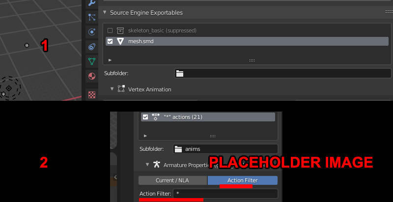

Blender

Preparing The Model
1) Using BlenderSourceTools import your target model as a QC file. Then rig your mesh or if already rigged, assign armature modifier for the mesh to the skeleton. Now in Edit mode on the armature select the bones hen translate the bones into a different proportion to your desired target model/mesh. Because all sequences are loaded into the timeline this affects all the animations.

1a) an optional thing you can take advantage of since you now have all animations imported is you can make some additional bones with bone controllers and rigging to fake out softer animation skinning. Basically, add/copy a bone in the skeleton, rename it, skin it to a loop, then put a copy rotation controller with the next bone in the heiarchy and use a 50~30 or whatever percentage.

3)First select the references and make sure the armature is in rest mode, then export. Then put it back into pose mode, select the armature, then go to the BST panel, select "action filter" then in the field place "*". This will set it to export every imported sequence
The final result: